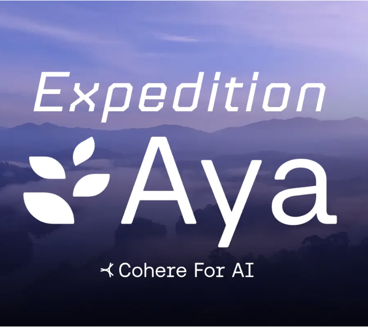
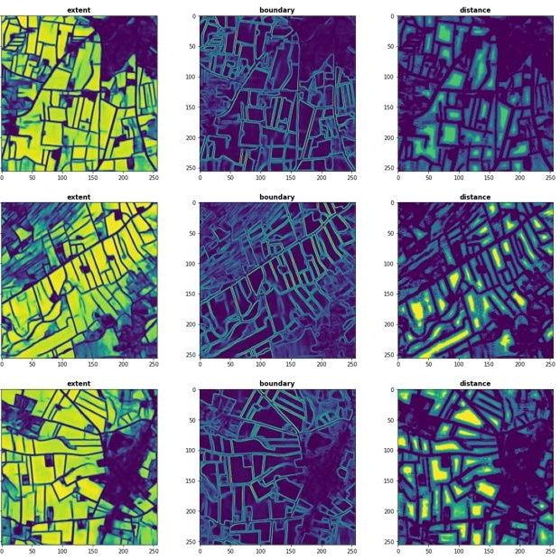
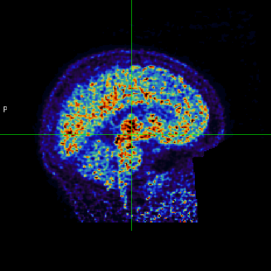

|
Avneet Kaur
avneetreen[dot]github[dot]io
Hi, I'm Avneet. Based in Copenhagen, I'm a cloud engineer at Novo Nordisk Novo Nordisk, where I work on scalable infrastructure solutions enabling research in healthcare . I hold a Master's degree in Computer Science from the University of Copenhagen, specializing in Machine Learning and Data Sciences. My research and professional interests focus in Applied AI/ Natural Language Processing, AI Safety, developing robust frameworks for secure AI deployment, exploring LLM architectures and responsible deployment, and building intelligent language systems with emphasis on safety and alignment.
Email • CV • Linkedin • Google Scholar • Github |

|
Publications
Multidimensional Analysis of Trust in News Articles
Kaur, A., Leekha M., Chawla U., Agarwal A., Saxena M., Madaan Ni., Kannan K., Mehta S.(2019). Proceedings of the AAAI Conference on Artificial Intelligence (AAAI 2020)
That's interesting, tell me more! finding descriptive support passages for knowledge graph relationships
Bhatia S., Dwivedi P., Kaur, A. Proceedings of the AAAI Conference on Artificial Intelligence (ISWC 2018)
Garg N., Sethupathy A., Tuwani R., Nk R., Dokania S., Iyer A., Gupta A., Agrawal S., Singh N., Shukla S., Kathuria K., Badhwar R., Kanji R., Jain A., Kaur, A., Nagpal R., Bagler G. Nucleic acids research (NAR 2018)
Research Projects
|

|
The Language Effect
Expedition AYA, Cohere Labs>, July 2024
In this project, we developed a multilingual framework to assess political biases in large language models (LLMs) across different languages, addressing limitations in understanding language-sensitive retrieval of political opinions. The approach involves data collection, model training, bias measurement, and the development of a multilingual framework. The anticipated outcomes include insights into language-sensitive opinion retrieval and the establishment of a foundation for more inclusive and language-aware LLMs.
|
|
|
Code Based Synthetic Data Pipeline for Multimodal data
Expedition AYA, Cohere Labs>, May 2025
In this project, we developed a Code Based Synthetic Data Pipeline for Multimodal data to train, enhance, and evaluate multimodal models such as Vision Language Models (VLMs).
|
|
|
Multilingual Climate Change chatbot
Expedition AYA, Cohere Labs, July 2024
In this project, I contributed to the development of Our Multilingual Climate Chatbot project that aims to make climate research and education accessible to all.
|
|

|
Field Boundary Delineation applied to Danish agriculture
University of Copenhagen, Department of Computer Science, DHI, January 2021 Avneet Kaur, in collaboration with, Stefan Oehmcke, Kenneth Grogan
Danish parcel delineation is an important task that currently has to
be done manually. In this work, we automate this laborious and error-prone process. Based on real data from Danish agriculture, we applied deep learning methods to efficiently detect parcels from freely available satellite images. To that end, we created a complete
data pipeline, from data collection over to processing, then building and evaluating the model.
|
|

|
Development of a robust and reproducible preprocessing pipeline for Positron Emission Tomography (PET) data
M.Sc. Thesis, University of Copenhagen, Department of Computer Science, January 2022 Avneet Kaur, under the supervision of, Melanie Ganz-Benjaminsen, Martin Nørgaard, Vincent Beliveau
We developed an open, robust and automated preprocessing pipeline for PET data using existing state-of-the-art neuroimaging software and implemented using Nipype.
To test the pipeline for robustness and computational reproducibility, the pipeline was tested on three datasets from different scanners and tracers across different computational environments.
|